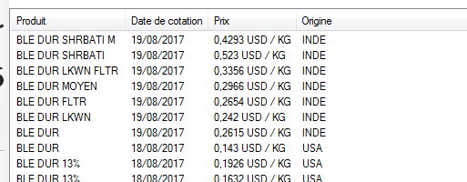

|
Afin de travailler avec les valeurs boursières, commencez par sélectionner le module « Prix spots
» en cliquant sur le bouton correspondant situé sur la barre de
navigation des modules, celle-ci se trouve à gauche de la fenêtre
principale. |
| Introduisez la
sous-position tarifaire dont vous désirez connaitre la valeur
boursière. Vous pouvez la saisir sous format standard, en utilisant le
point comme séparateur de catégories, ou bien introduire simplement les
dix chiffres de la sous-position. |
| Choisissez une date de facturation. Cliquez sur le bouton en forme de flèche situé à gauche du champ intitulé « Date de facturation
» pour faire apparaitre un calendrier flottant. Retrouvez la date qui
vous intéresse, puis sélectionnez la. Notez que vous pouvez naviguer à
travers les mois à l'aide des boutons en forme de flèche situés en
haut du calendrier. Pour changer d'année, cliquez sur la zone
représentant le mois, puis choisissez l'année désirée. |
| Cliquez ensuite sur le bouton « Rechercher
». Le HUB essayera de retrouver, dans ses bases de données, toutes les
valeurs boursières correspondant à la sous-position tarifaire que vous
avez indiqué, dont la date de cotation est la plus proche, mais ne
dépassant pas la date de facturation. Les résultats sont
alors affichés dans le panneau inférieur de la fenêtre. |
| Il se peut que le résultat de votre recherche ne comporte qu'un nombre restreint d'informations. Cliquez sur le bouton « Afficher plus de détails
», d'autres colonnes viendront s'ajouter à celles déjà présentes pour
obtenir un ensemble plus complet des données relatives à chaque
cotation. |
|  |
| Spécifier l'incoterm de la marchandise. |
|
| et / ou |
|
| Préciser l'origine du produit. |
Le bouton « Type de vue
» bascule l'affichage entre le mode mosaïque et le mode liste. Lorsque
le résultat de la recherche fournit beaucoup d'informations, vous
pouvez:
|
| Pour une meilleure lecture des données, vous pouvez agrandir la taille du panneau des résultats en cliquant sur le bouton « Masquer le formulaire ». |
|
| Pour afficher à nouveau le formulaire de recherche, cliquez sur le bouton « Afficher le formulaire ». |